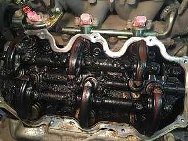
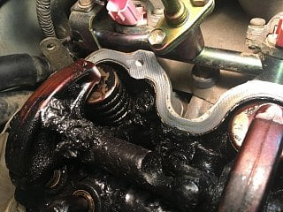
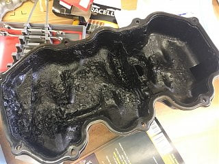

-
Thanks for the reply. I agree that a lot of "owners" are not savvy in most things mechanical about their vehicles, but the design target of any major manufacturing company is to build something that requires little understanding on the part of their customers (think the slogan for VW - "Drivers Wanted"). Few achieve this with any satisfactory remark, aside from Toyota in the 80's and 90's.Originally posted by NissanEgg View Post
I would offer the perspective of achieving a condition of "no HG failure in 336K miles, by performing all the "difficult to determine maintenance" along the way, would not be considered an accomplishment. It may be accurate to extrapolate these findings to suggest that it is possible to NOT blow the gasket if the owner is able to detect and afford to pay for all the little coolant leaks along the way, but that also suggests a poor design in the first place. Why is the engine constantly leaking coolant?
In my perspective, if the primary cooling channel is unobstructed (no casting flash), then the minor leaks would not cause a major gasket/engine failure. You can't ignore the evidence of all the people on the websites that experience this failure. Whereas there isn't an good/fast way to determine this, probably without monitor EGR temperature of the back two cylinders (all of them would be better), on an engine with and without the block modification, to know if there is a wide temperature variance to suggest premature failure. If the turbo engines are failing to do detonation in these back two cylinders, you could suggest this is an issue and that boost causes the even more premature failure (accelerated scenario).
I plan to port one of the blocks I have, to clear out the casting flash, and see what happens. -
Hmmm…or I have three shot-ass motors, and the folks at clubxterra.org all have shot-ass motors too.Originally posted by 88sinZ View Post
What evidence do you have to support "built to last"? There is a lot of evidence against that statement. How long is "built to last" in your mind? 40,000 miles? 80 thousand? 20 years? 30 years?
Dont' even get me started about the shitty Nissan clamps. I've converted all those shitty clamps to fuel line clamps. I found BMW clamps that I thought might work the best, but settled on a Napa fuel line clamp that won't stretch over time, causing our less experienced drivers and repair techs to just keep clamping them down until they damage all the hoses.
-
Like I said earlier, vast majority of Xterra and any SUV owner is completely ignorant when it comes to maintenance. The small number of people of the SUV population actually on the forums are experiencing issues as a result of a previous owner's lack of maintenance.
I work on these engines and vehicles daily and the number of them that require headgasket replacement are small, maybe 2-3 a year out of the 125 or so different Xterra/Frontiers with the VG33 we service at our dealership. And of those needing headgasket are new to our dealership and are very nasty under the hood and some so built up with sludge under the valve covers that you cannot even see the lifter plates and head bolts. There is even a doctor who has owned a 2-door V6 5-speed 4wd Pathfinder since 1987 that has not had to have a headgasket job and it is his daily driver with over 340k miles. Yes he has had to change out all the pesky coolant hoses due to leak and valve cover gaskets and surprisingly no sludge built up in the heads, and that is because he is one of the few people willing to spend money to fix everything wrong as it happens.Last edited by NissanEgg; 02-26-2017, 12:26 PM.
1986 300ZX Turbo…sold
1990 Skyline GT-R…new money pit
2014 Juke Nismo RS 6-speed…daily -
I don't disagree with the possibility of a head gasket lasting longer than most I see failing, but it still doesn't make sense that there are this many failures (even in the small sample set of the forums and other websites of Nissan complaints). I don't know of "any" other car that experiences this frequent and early HG failure, not even American cars. There is certainly "some" issue here. If the small leaks are causing this failure, then the leaks are the problem…also unacceptable. I would add, if the engine had proper cooling to begin with, the little leaks are likely to never pose a problem. I've been driving around my Toyota shop truck for miles and miles with a leaking water pump. The cooling system is rarely full, thus less cooling than optimal, but still adequate. I think the Nissan block may be challenged in it's original design and should be considered when rebuilding. I would be interested to see if the same casting flash was allowed in the VQ40DE block.
I've never pulled open the block in my truck, but I have pulled open the block (removed freeze plugs) in the block of my Toyota MR2 (3SGTE), and there is NO evidence of casting flash. It is completely smooth and suited for excellent cooling. That block was first designed in 1986 (based on the 3SGE manufactured in 1984), so it has similar age/design time as the VG33. I can't say for sure, but I think the block cooling capacity is degraded due to the casting flash.
I have seen some poor maintenance, like the underside of the valve covers that look like a volcano went off and left dry black ash under them. This would not necessarily affect the cooling capacity, but certainly could be part of the reason these engines are commonly throwing rods. I also think that when the HG's fail, people are fixing the HG's without attention to the main and rod bearings. I think there are a lot of engine failures as a result of coolant in the oil after the HG's fail. I removed the bearings from a 150K mile engine after a HG, where the PO said they only drove it a couple miles after the failure occurred. The bearings showed significant wear. It's had to say the condition of the bearings before the failure, but they certainly showed wear.
I think the safe bet to keeping these engines on the road are to improve the cooling when it's appropriate (engines removed) and install all new bearings and gaskets (might as well put in new rings and hone the cylinders too).
   -
so you're telling us that an engine implemented in 1983 was designed in 1986 based on a yota engine??
and you call any leak a small leak? any leak is a MAJOR leak, there's no compromise
then you say you've never cracked open a VG series and you assume all this BS? nothing personal man, but don't claim shit you've never dealt with
you gotta do some more research bro, and i say that in the most respectful way i can
the XT and Fronti radiators are shit and have shit airflow, the A/Ts are easy to over heat just crawling sand beaches (NCBBA registered SVE D22) due to no A/T independent cooler. you ether have to blast heat or pop the hood on hot summer days. they would easily benefit from increased capacity radiator and an electric auto+manual operated fanLast edited by 88sinZ; 02-26-2017, 09:28 PM. -
Hmmm…sorry, you are misunderstanding me, again. I've not cracked open the block in my "Toyota" truck. I have three open VG's right now.Originally posted by 88sinZ View Post
Im also saying that the casting flash evident in my 3SGTE block (design came out in 1986, based on a 3SGE block developed in 1984. Not sure where you got 1983). I only bring this up because it has been stated that age was a factor in these engines; that they were an old design. I disagree. The casting flash is a result of lack of care in the manufacturing process.
Lastly, I'm saying that I can run a small leak in the water pump on my Toyota truck FOREVER, without it causing the cooling issues that NissanEgg suggests may be contributing to HG failures in the VG's.
I'm further saying that I believe the cooling issue from these "minor" leaks he speaks of, would likely be less of an issue with better cooling in the block to begin with. Or, as you stated, perhaps the radiators are really not providing enough cooling. That could be another factor I hadn't considered yet. I have noticed there may be a popular aftermarket (thicker) radiator. Perhaps that is something I could test as well.
-
nah man, what im saying is the VG series (specifically the VG33X(Y) XT and Frontis) had shit air flow and if you're crawling them they need a engine and tranny cooling upgrade… that's all.
Yotas are normally have head/block material matching i.e. alum/alum resulting in uniform heat expansion and anode/cathode non-subjugation.
We can disagree on leaks, but we can agree how they effect overall
I will say there's a grey line definition of early and late VG33's the later being the better option in a short block option
Last edited by 88sinZ; 03-04-2017, 02:51 AM. -
I have late 80's early 90's Toyota vehicles, so they are all cast iron blocks. This makes cooling very important, but the care that was given to the block casting is highly improved compared with the VG33E, so it likely experiences fewer issues. My shop truck V6 is old and tired, so when I pull it (someday), I'll inspect the block to see if it looks like other Toyota blocks or this pesky VG33E.Originally posted by 88sinZ View Post
I have a VG33E from an Elgrand (JDM). I'm not sure of the age (no VIN), but it has the same cooling channel issue as all my 2000 Xterra VG33E's. What have you seen improved in the later VG's?

Copyright © 2006–. All rights reserved. Privacy Policy